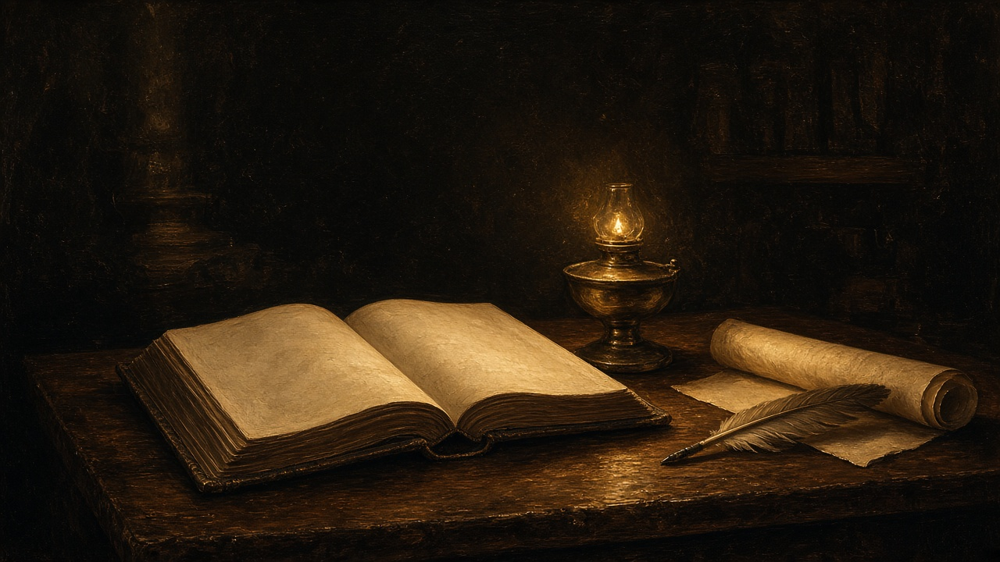
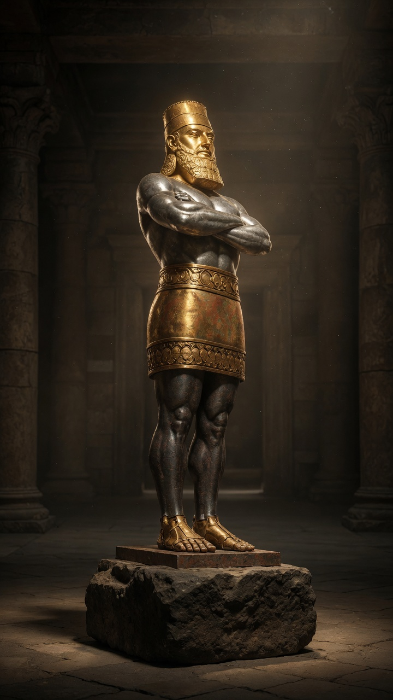
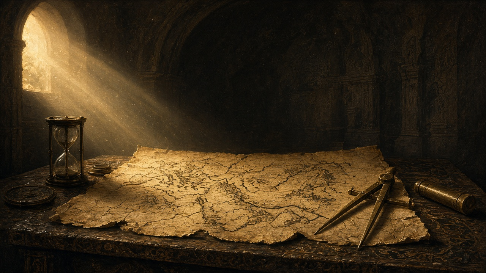
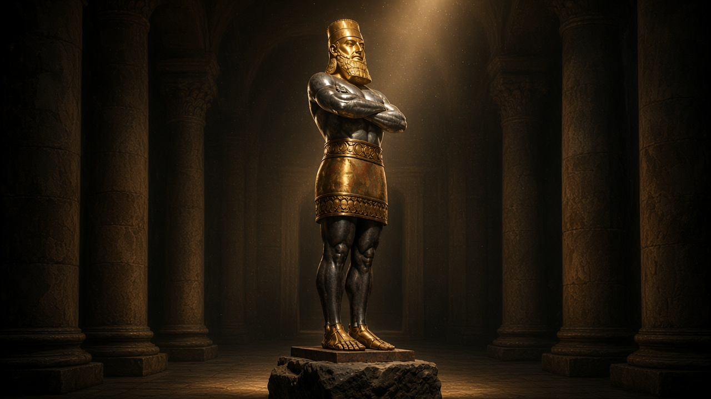
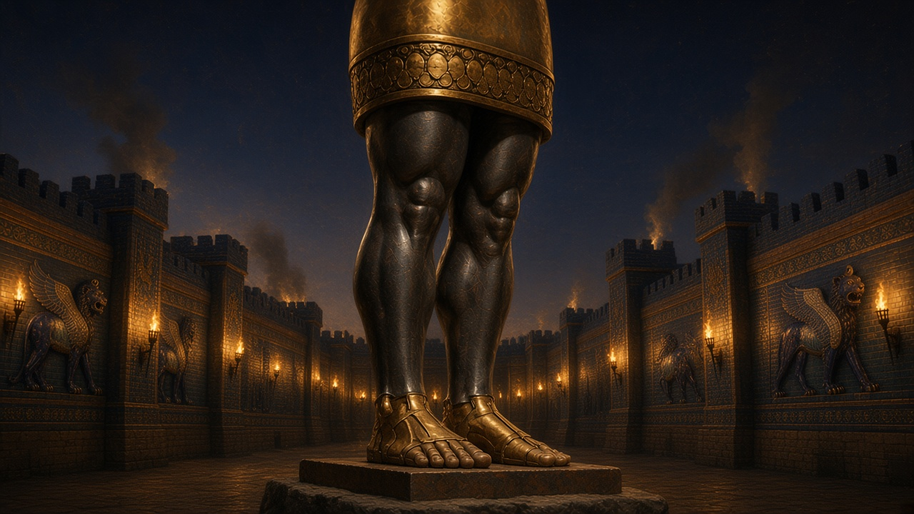
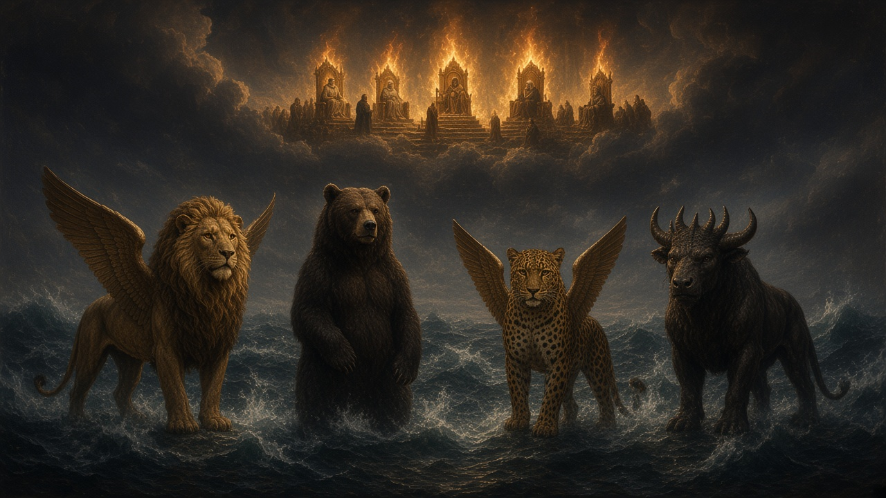
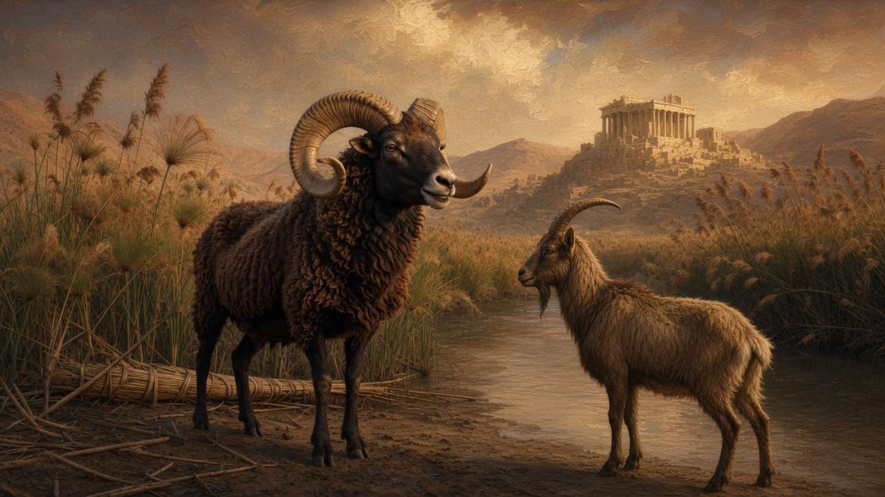
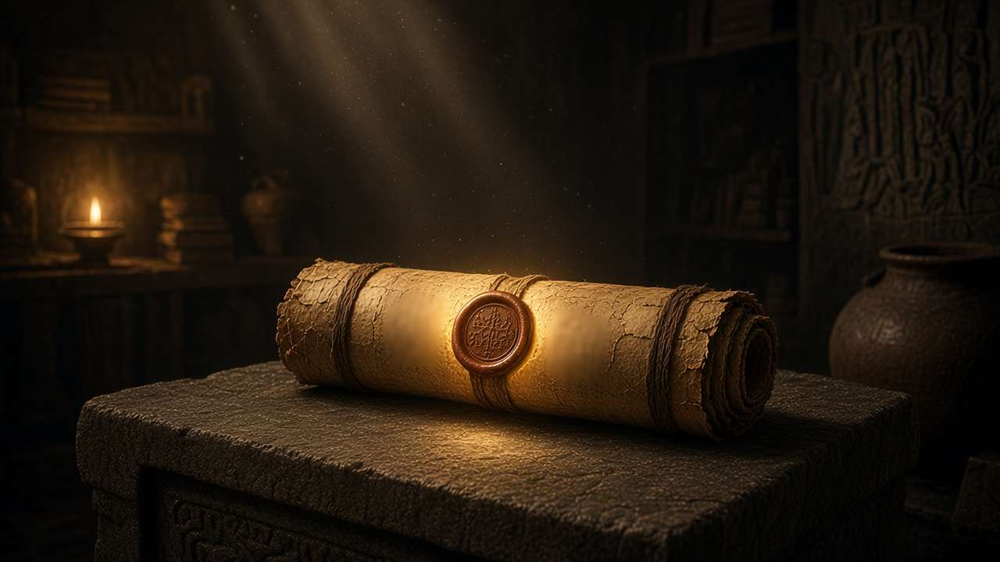

The text
Each sitting opens Daniel in the study desk: the excerpt, How to study, the Scripture dock, and a quiz that must be answered before you continue.

A cinematic sitting through the book of Daniel
Walk Daniel chapter by chapter. Read the text, stand on the year, then hold the symbol. The sitting is guided: you are told what to expect, you prove the checkpoint, and a highlighted control shows you where to go next.

Each sitting opens Daniel in the study desk: the excerpt, How to study, the Scripture dock, and a quiz that must be answered before you continue.

The horizon timeline keeps you on the year the chapter belongs to — 605, 539, 457, A.D. 31, 538, 1798, 1844, Daniel 12 — so the map and the sitting stay on the same night.

When the chapter names a metal, a beast, or a court, you can hold that symbol in the 3D gallery. The statue illustrates the sitting; it does not replace it.

Sheets 0–6. Learn how to read the book, stand at the king’s table, then watch the colossus, Dura, the tree, the wall, and the den.
Enter the prologue
Sheet 7. Four beasts from the sea, the little horn among the ten, and the court that sits in heaven before the stone strikes.
Continue the sittings
Sheets 8–10. The ram and goat, seventy weeks cut from 2,300 days, and Michael standing when the book is sealed until the end.
Continue the sittings
Only the prologue starts open. Finish sitting N — the workbench and checkpoint — to open sitting N+1 in the study desk, the 3D gallery, and the map. Daniel 1 through Michael standing stay closed until you walk them in order.
A church or classroom license is planned beside the personal sitting, so a teacher can walk a class through the scroll without each student hitting a wall. Payments are not live yet. This page is the offer, not a checkout.